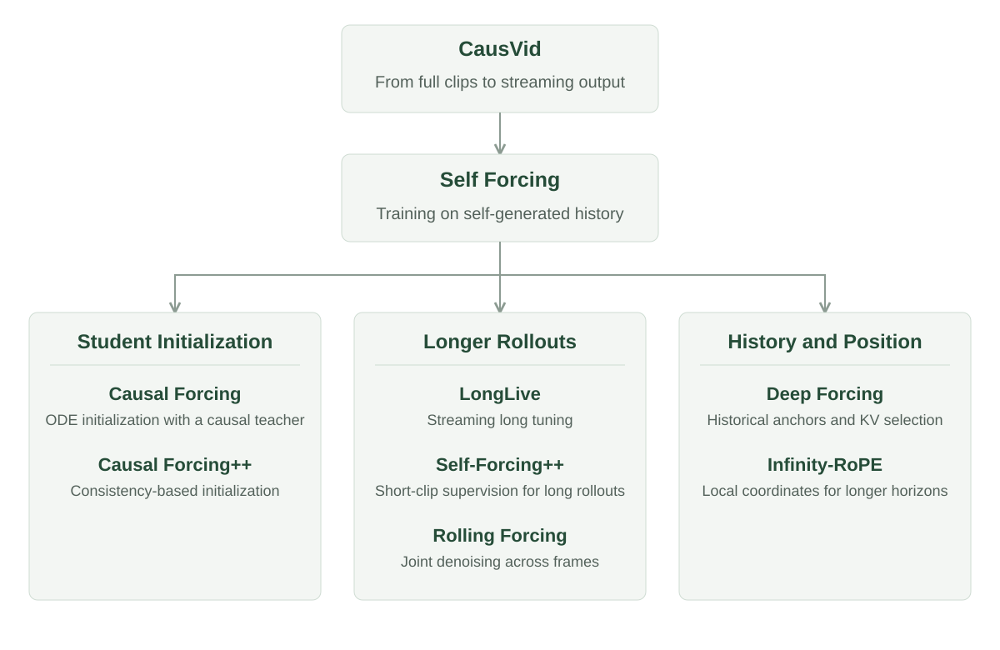

Streaming Video Generation: Past and Future
From Video Generation to Real-Time Interaction
In real-time interactive video generation, each new input shapes what comes next. Change the camera direction, and the model needs to produce a new view. Change the prompt, and the next frames need to reflect it. As long as the interaction continues, generation must keep going. Each prediction must account for both the existing video and the latest input, with little enough delay to keep the interaction fluid.
CausVid 10 was an important early step in this direction. Bidirectional video diffusion jointly denoises an entire clip, allowing each frame to draw on future information. Causal generation instead moves forward through time, predicting the present from the past. CausVid distills a bidirectional teacher into a few-step causal student and reuses past computation through a KV cache, enabling high-quality video to stream as it is generated.
Once video generation proceeds autoregressively, the model repeatedly predicts what comes next from what it has already produced. Language models follow the same broad pattern, but two differences matter: the space of possible outputs and the computation performed at each step.

The first difference is discrete versus continuous output. A language model selects each token from a finite vocabulary, which constrains the available choices. Video diffusion generates visual content in a continuous space, without an equivalent vocabulary constraint. Small errors in appearance, structure, or motion can enter the context for the next prediction and accumulate over successive steps, gradually causing the video to drift.
The second difference is how inference works. At each step, a language model uses one forward pass to compute the current token's KV and predict a distribution over the next token. Autoregressive video diffusion alternates between two kinds of forward pass: denoising a noisy input at \(t>0\), and encoding the generated clean content into historical KV at \(t=0\). Denoising may require several passes; context writing prepares the information needed for the next generation step.
A generated frame must work both as an output and as context for what follows. Its quality therefore matters beyond the moment it appears on screen.
This creates two practical challenges: training the model to continue from past content, and reducing the denoising computation at each step so generation can keep up with interaction.
Teacher Forcing trains the model to predict from ground-truth history. Diffusion Forcing 8 allows different sequence positions to have different noise levels, bringing sequence prediction and diffusion denoising into a common framework. Few-step distillation addresses the computational side: sequential output is useful for interaction only if each step arrives quickly enough.
The choice of training history is particularly important. Teacher Forcing provides frames from real videos, whereas inference relies on the model's own outputs. Predicting accurately from real history does not, by itself, teach the model to handle the history it creates.
A model that predicts well from ground-truth frames may still struggle to continue from its own outputs. Self Forcing 2 brings self-generated history into training. The model performs autoregressive rollouts with a KV cache and learns through video-level distribution matching. Both TF and SF predict the current content from history; what changes is where that training history comes from:
Here, \(i\) indexes a frame or video chunk, \(z_i^t\) is the noisy input, and \(\hat{x}_i\) denotes the predicted clean content. The key change is in the conditioning term: ground-truth history \(x_{<i}^{\mathrm{data}}\) is replaced by the model’s own generated history \(\hat{x}_{<i}\).
We can also understand this change in terms of generation trajectories. Each prediction changes the context for the next, allowing small errors to accumulate along a rollout. Self Forcing trains on histories produced by the model itself, exposing training to the errors that arise during generation.

The two curves illustrate generation trajectories before and after a model update. The model first performs an autoregressive rollout, then updates its parameters through video-level DMD, and finally generates a new rollout with the updated parameters. The orange arrows illustrate the effect of learning: the update changes how the model continues from its own history, bringing subsequent rollouts closer to the target video distribution.
The histories a model encounters depend on what it has already generated. Self Forcing brings this feedback loop into training, teaching the model to make later predictions under the conditions its own outputs create. The apparent “pull” in the figure acts through parameter updates during training; at inference, the model continues to generate autoregressively.
Better Quality, Longer Horizons
Self Forcing brings self-generated history into training, but several questions remain: how should the student be initialized, how can short-window supervision support long rollouts, and how can limited context sustain longer inference?
Where should the student start? Causal Forcing 11 addresses initialization. During ODE initialization of a few-step model, a bidirectional teacher can use future information that the causal student cannot access. From the student’s perspective, the same visible input can therefore have different regression targets, depending on information it cannot see. Causal Forcing uses an autoregressive teacher for ODE initialization, aligning the targets with the information available to the student, before proceeding to Self Forcing distribution matching.
Causal Forcing++ 12 extends this line of work to one- or two-step framewise generation. Its causal consistency distillation uses online teacher supervision at adjacent timesteps to learn a few-step initialization, reducing the need to precompute and store full ODE trajectories. Fewer sampling steps and framewise output both help reduce response latency.
Initialization is only part of the problem. Generating longer videos also means bridging the gap between the training window and the inference horizon. Extending a training window means more spatiotemporal tokens and intermediate states, increasing both memory use and computation. Bidirectional teachers, meanwhile, can reliably supervise only short clips. A real interaction may last minutes or hours—far beyond the interval that training directly covers.
How can short-window supervision support longer rollouts? LongLive 4 uses streaming long tuning to continue segment by segment along the model's own history, with a short-video teacher supervising each segment. Short-window attention and a frame sink control cost and retain historical anchors. Self-Forcing++ 5 instead samples clips from long self-generated videos for distillation. Both approaches break a long trajectory into pieces the teacher can assess, extending the reach of local supervision.
Rolling Forcing 13 changes how generation advances. It jointly denoises multiple frames at different noise levels, relaxing strict causality between neighboring frames. The denoising schedule itself can therefore affect how well generation holds up over time.
How can limited context support longer inference? As a rollout grows, retaining and reading its entire history becomes impractical. The model must select useful information within a fixed cache budget. Deep Forcing 6 preserves early history as an anchor and uses attention from recent predictions to select historical KV entries, reducing redundancy. Infinity-RoPE 14 addresses temporal position encoding: a moving local coordinate system organizes past and present content without letting time indices grow beyond the model's original positional range. These approaches improve context use through history selection and position encoding, respectively.
These approaches address different parts of the generation process. Initialization sets the student's starting point. Long-rollout training and denoising schedules shape how generation advances. History selection determines what survives in context, while position encoding establishes its temporal relationship to the current prediction.

Let Future Losses Teach the Model What to Remember
Initialization, long-rollout training, history selection, and position encoding have all improved autoregressive video generation. Yet beyond the training window, errors can still accumulate into visual drift and breakdown. One possible source of this degradation is how the model learns to represent history: the model learns to use historical representations, while the process that constructs them still lacks supervision.
Past frames must be encoded into KV representations before later predictions can read them. But using history in a prediction does not necessarily train the computation that constructs it. If historical KV is treated as a fixed condition, later losses can teach the model how to use it, but cannot flow back through that path to improve how it is built.
To make this distinction clear, we can separate the computation into two roles: reading historical KV to denoise the current content, and writing generated frames into new KV for later predictions.
Denoting the existing cache by \(\mathrm{KV}_{<i}\), we can write these two computations as:
The two lines use the same parameters \(\theta\) for different jobs. The first denoises the current content using history at \(t>0\); the second writes clean frames into historical KV at \(t_{\mathrm{ctx}}=0\). KV connects the two computations, but future losses can train history writing only if gradients pass through the second line.
In Self Forcing, gradients are stopped along this writing path, so historical KV serves as a fixed condition for later predictions. Self Gradient Forcing (SGF) 3 restores that path, allowing future losses to supervise history construction. The difference is visible in where the stop-gradient operator is placed:
The operator \(\operatorname{sg}\) stops gradients. SF places the entire KV construction inside it; SGF detaches only the generated frames, leaving KV construction trainable. The model can therefore learn to encode the same history in ways that better serve subsequent predictions.
SGF implements this gradient path with two training passes. The first runs a rollout without gradients, recording generated latents and noisy inputs at the sampled denoising exit. The second performs parallel context-gradient reconstruction under a causal mask. Sampled latents remain detached, while the reconstructed KV path is differentiable.
SGF learns how to encode useful context within a short training window, then reuses that computation throughout longer rollouts. It substantially improves long-horizon consistency when the inference horizon exceeds the training window.
Restoring history-writing gradients also revealed something unexpected: in some examples, SGF's first frame was slightly blurrier than Self Forcing's.
The first frame has no historical video KV to read, making this change a useful clue. Could updates that improve context writing interfere with updates that improve current-frame denoising?
The two computations in Eq. (2) share parameters. Restoring history-writing gradients therefore exposes those parameters to updates from both context writing and current-frame denoising. Let \(g_{\mathrm{context}}\) and \(g_{\mathrm{denoise}}\) denote their gradient contributions. They add to form the shared-parameter gradient, and cosine similarity measures their alignment:
For nonzero gradients, \(s<0\) indicates conflicting directions: an update that helps one role may hurt the other. When the contributions are added, their opposing components cancel.
Self Gradient Forcing Plus (SGF+) 1 measures these two gradient contributions separately in Wan2.1 15 and computes their paired cosine similarity. In both Attention and FFN, the paired gradients have negative cosine similarity, indicating conflicting updates to the shared parameters. Adding the two contributions partially cancels them, making it harder to optimize both roles together.
![Context-writing and denoising gradients in Wan2.1. Left: t-SNE projections by role. Center: mean directions. Right: paired cosine similarities for the same prompt and denoising timestep. Across 128 prompts and four denoising timesteps, Attention and FFN each yield 512 gradient pairs, all with negative cosine similarity. The angles between mean directions are approximately 104.2° and 106.3°, respectively. Projections and mean directions use sampled coordinates; paired cosines use the full gradients of the selected weights. Data from SGF+ [1].](assets/gradient_distributions.png)
![Context-writing and denoising gradients in Wan2.1. Left: t-SNE projections by role. Center: mean directions. Right: paired cosine similarities for the same prompt and denoising timestep. Across 128 prompts and four denoising timesteps, Attention and FFN each yield 512 gradient pairs, all with negative cosine similarity. The angles between mean directions are approximately 104.2° and 106.3°, respectively. Projections and mean directions use sampled coordinates; paired cosines use the full gradients of the selected weights. Data from SGF+ [1].](assets/mean_gradient_directions.png)
![Context-writing and denoising gradients in Wan2.1. Left: t-SNE projections by role. Center: mean directions. Right: paired cosine similarities for the same prompt and denoising timestep. Across 128 prompts and four denoising timesteps, Attention and FFN each yield 512 gradient pairs, all with negative cosine similarity. The angles between mean directions are approximately 104.2° and 106.3°, respectively. Projections and mean directions use sampled coordinates; paired cosines use the full gradients of the selected weights. Data from SGF+ [1].](assets/gradient_conflict.png)
A similar pattern appears in LTX-2.5 16. In the heatmaps below, mean paired gradient cosine similarity is negative for most layer–noise-level combinations, with conflict strength varying across layers and noise levels. These measurements provide further evidence of gradient conflict between context writing and denoising.

Motivated by this observation, SGF+ replaces the shared model in Eq. (2) with a context writer \(\mathcal C_{\theta_c}\) and a denoiser \(\mathcal D_{\theta_d}\). They construct historical representations and generate the current frame, respectively:
Unlike Eq. (2), the two computations now have separate parameters. As in the SGF formulation in Eq. (3), generated frames remain detached while historical KV construction remains trainable.
Separate parameters do not disconnect the two roles. The loss updates the denoiser directly and supervises the context writer through the denoiser’s dependence on historical KV. Both models are still trained jointly with the same generation objective, but each can optimize its own parameters.
Across framewise and chunkwise settings, SGF+ improves visual quality and long-horizon consistency. With a five-second training window, it demonstrates continuous video generation lasting up to 24 hours, without long-video fine-tuning. The result illustrates how far the inference horizon can extend beyond the training window.
Together, SGF and SGF+ revisit two training choices: whether future predictions can supervise context writing, and whether writing and denoising should share parameters. SGF lets future losses train history writing. SGF+ addresses the resulting conflict with current-frame denoising. Both aim to make the history more useful for what comes next.

Some Further Thoughts
History writing and current-frame denoising are closely connected through KV, but that connection does not require identical weights. Separating the roles opens several directions worth exploring.
What about GPT and other LLMs? GPT-style LLMs are autoregressive too. Why do they typically share parameters across these roles, while video diffusion models may benefit from separating them? Token prediction provides a common framework for much of language understanding and generation. How best to unify visual understanding and generation remains an open question. Computationally, GPT builds KV and predicts the next token in a single forward pass. Autoregressive video diffusion alternates between context writing at t=0 and denoising at t>0. Context writing extracts historical information for future predictions; denoising recovers the current frame from a noisy input. These different input states and computational roles may place different—even conflicting—demands on shared parameters.
Parameter separation could start earlier. The two roles already show distinct gradient patterns and negative alignment at TF initialization, before SGF training begins. Separation could therefore begin during TF initialization, letting the model learn history construction and history-conditioned prediction as distinct roles from the outset. The same idea could extend to World Action Models, where Teacher Forcing is a common training approach. Separating context writing from visual and action prediction may help models learn historical representations that better serve subsequent predictions.
Lightweight writers and KV compression. Separating the roles also makes it possible to size each network for its job. Context writing may not need as much capacity as denoising. One direction is a lightweight writer that compresses redundant video history into useful KV representations under a limited cache budget. During training, the denoiser's parameters could stay fixed while future generation losses optimize the writer through its KV outputs. The aim is to preserve visual quality and long-horizon consistency while reducing parameter storage, KV-cache memory, and attention costs.
Toward Unbounded Video Extrapolation
Training windows are finite. An interaction has no predetermined endpoint. Users may spend minutes or hours changing camera angles and steering the content. The model needs to keep responding while maintaining continuity with what it has already generated. Long-horizon generation is therefore a foundation for real-time interactive video.
SGF and SGF+ explore one way to learn long-horizon extrapolation from short training windows. The model learns to construct historical representations that help future predictions, then reuses that writing mechanism throughout a longer rollout. The duration of the training clips need not dictate how long the model can keep generating.
Extending generation further, with no fixed endpoint as the eventual goal, means maintaining visual quality and responsiveness at a sustainable computational cost. New inputs should promptly shape subsequent frames without disrupting subject identity, scene continuity, or coherent motion. As inference continues, the model must retain useful history within a bounded cache and keep computation affordable.
These capabilities could expand what is possible with world models, digital humans, and interactive creative tools. Users can watch and steer as the video unfolds, without generation stopping at a preset clip boundary. The future of streaming video lies in unbounded extrapolation: learning from short training windows to break past today’s limits on duration—and create visual experiences that never have to end.
References
- Su, Z., Zhuang, J., Li, Y., et al. SGF+: Decoupling Gradient Flows for Autoregressive Video Generation. arXiv:2610.10429v2, 2026. https://arxiv.org/abs/2610.10429v2
- Huang, X., Li, Z., He, G., Zhou, M., and Shechtman, E. Self Forcing: Bridging the Train-Test Gap in Autoregressive Video Diffusion. arXiv:2506.08009, 2025. https://arxiv.org/abs/2506.08009
- Zhuang, J., Zhang, S., Bian, Y., et al. Self Gradient Forcing: Native Long Video Extrapolation. arXiv:2607.20368, 2026. https://arxiv.org/abs/2607.20368
- Yang, S., Huang, W., Chu, R., et al. LongLive: Real-time Interactive Long Video Generation. arXiv:2509.22622, 2025. https://arxiv.org/abs/2509.22622
- Cui, J., Wu, J., Li, M., et al. Self-Forcing++: Towards Minute-Scale High-Quality Video Generation. arXiv:2510.02283, 2025. https://arxiv.org/abs/2510.02283
- Yi, J., Jang, W., Cho, P. H., et al. Deep Forcing: Training-Free Long Video Generation with Deep Sink and Participative Compression. arXiv:2512.05081, 2025. https://arxiv.org/abs/2512.05081
- Bengio, S., Vinyals, O., Jaitly, N., and Shazeer, N. Scheduled Sampling for Sequence Prediction with Recurrent Neural Networks. 2015. https://arxiv.org/abs/1506.03099
- Chen, B., Martí Monsó, D., Du, Y., et al. Diffusion Forcing: Next-token Prediction Meets Full-Sequence Diffusion. 2024. https://arxiv.org/abs/2407.01392
- Dai, Z., Yang, Z., Yang, Y., et al. Transformer-XL: Attentive Language Models Beyond a Fixed-Length Context. 2019. https://arxiv.org/abs/1901.02860
- Yin, T., Zhang, Q., Zhang, R., et al. From Slow Bidirectional to Fast Autoregressive Video Diffusion Models. CVPR 2025. https://arxiv.org/abs/2412.07772
- Zhu, H., Zhao, M., He, G., et al. Causal Forcing: Autoregressive Diffusion Distillation Done Right for High-Quality Real-Time Interactive Video Generation. 2026. https://arxiv.org/abs/2602.02214
- Zhao, M., Zhu, H., Zheng, K., et al. Causal Forcing++: Scalable Few-Step Autoregressive Diffusion Distillation for Real-Time Interactive Video Generation. 2026. https://arxiv.org/abs/2605.15141
- Liu, K., Hu, W., Xu, J., Shan, Y., and Lu, S. Rolling Forcing: Autoregressive Long Video Diffusion in Real Time. 2025. https://arxiv.org/abs/2509.25161
- Yesiltepe, H., Meral, T. H. S., Akan, A. K., Oktay, K., and Yanardag, P. Infinity-RoPE: Action-Controllable Infinite Video Generation Emerges From Autoregressive Self-Rollout. arXiv:2511.20649, 2025. https://arxiv.org/abs/2511.20649
- Wan Team. Wan: Open and Advanced Large-Scale Video Generative Models. arXiv:2503.20314, 2025. https://arxiv.org/abs/2503.20314
- Lightricks. LTX-2.5. Official model card, 2026. https://huggingface.co/Lightricks/LTX-2.5
Cite
@article{su2026sgf+,
title={SGF+: Decoupling Gradient Flows for Autoregressive Video Generation},
author={Su, Zihan and Zhuang, Junhao and Li, Yaowei and Lu, Siwen and Li, Haoran and Li, Lingen and Wu, Haoyu and Jin, Weiyang and Zhang, Songchun and Huang, Haoyang and others},
journal={arXiv preprint arXiv:2610.10429},
year={2026}
}
@article{zhuang2026self,
title = {Self Gradient Forcing: Native Long Video Extrapolation},
author = {Zhuang, Junhao and Zhang, Shiyi and Bian, Yuxuan
and Li, Yaowei and Luo, Yawen and Liu, Yijun
and Jin, Weiyang and Zhang, Songchun and He, Xianglong
and Zhang, Xuying and others},
journal = {arXiv preprint arXiv:2607.20368},
year = {2026}
}